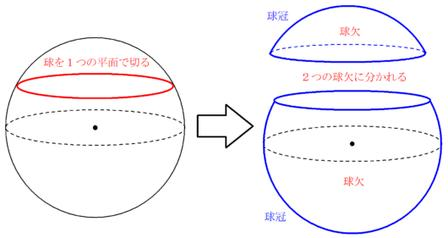
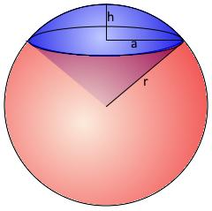
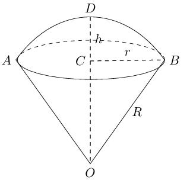
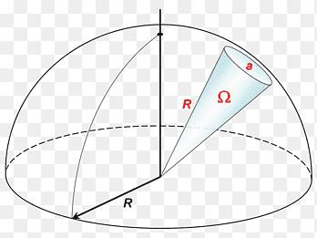

球冠，球缺和球锥 数学 创建 2026-07-03 修改 2026-07-07 字数 约 100 字 阅读 预计阅读 1 分钟 标签 几何 球冠(曲面，只有球面部分) 剩下的那个大块一般叫大球缺 球缺（立体，球冠 + 圆形底面围成的实体）  球锥（球扇形 / 球面扇，球心 + 圆锥 + 球冠组合体）   球缺环  在3D激光雷达的扫描范围和死区上比较常见 相关内容 多个点的质心特性 微分与积分 四元数 一些数学概念